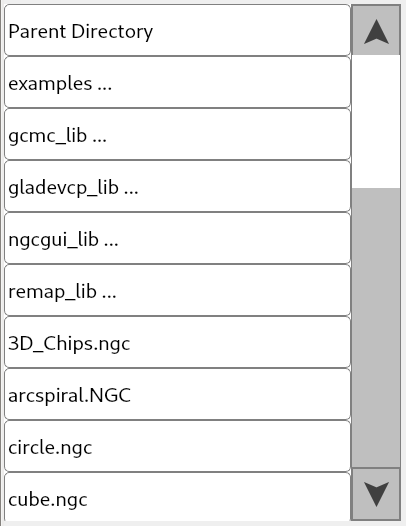
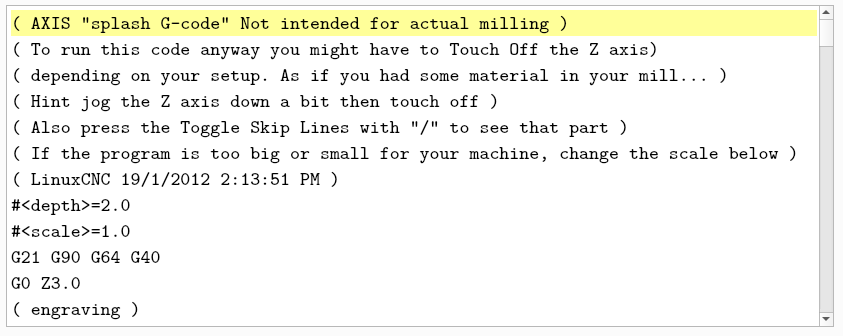
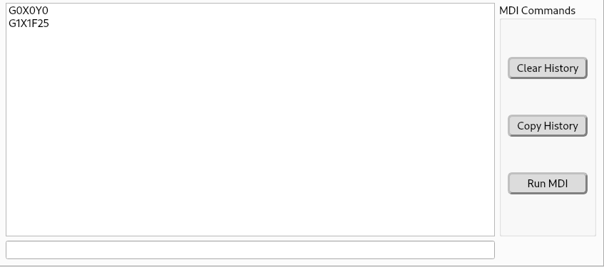
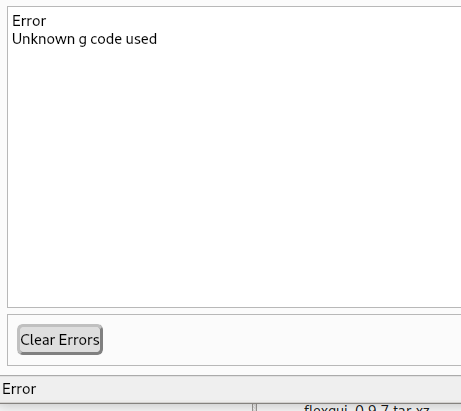
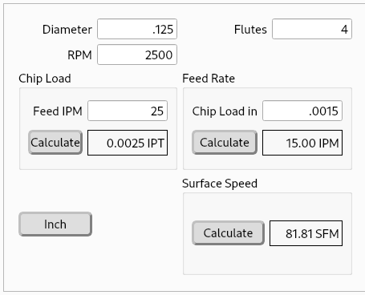
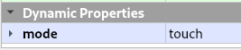
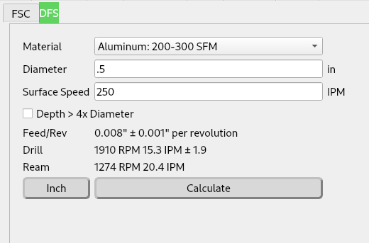
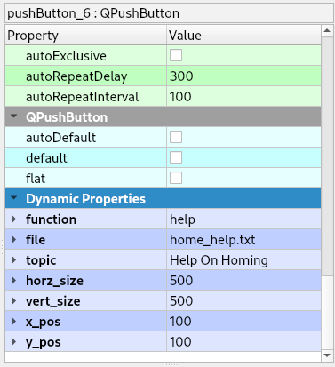
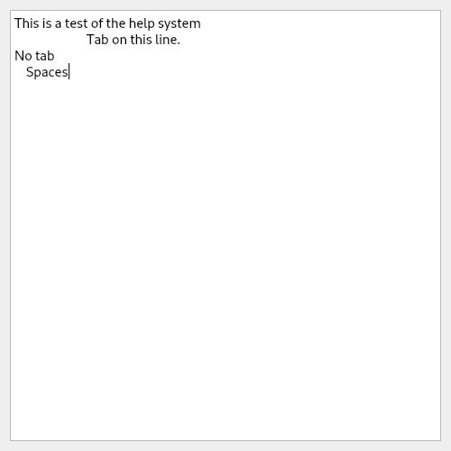

Miscellaneous Items¶
File Selector¶
Add a QListWidget and name it file_lw, this can be used with a touch screen by specifying the touch input. A single left-click or touch is all that’s needed to use the File Selector. A left-click or touch on a directory will change to that directory. A left-click or touch on the up or down arrow will move the list by one. A left-click or touch in between an arrow and the slider will move the list by one page. Touch-and-hold to move the slider.
If you use the touch input, the selector looks like this
Note
Make sure you use a QListWidget and not a QListView for the file selector.
Code Viewer¶
To add a code viewer, add a QPlainTextEdit from Input Widgets and name it gcode_pte
Code Viewer Controls¶
The Code Viewer allows you to edit the file in Flex GUI without using an external text editor. You can save the current code to the current file name, save the current code with a new file name and you can search the code.
Function |
Type |
Object Name |
Save |
QPushButton |
save_pb |
Save As |
QPushButton |
save_as_pb |
Search |
QPushButton |
search_pb |
MDI Viewer¶
To add a MDI viewer, add a QListWidget from Item Widgets and name it mdi_history_lw
To enter MDI commands, add a Line Edit and name it mdi_command_le.
Error Viewer¶
To add an error viewer, add a QPlainTextEdit from Input Widgets and name it errors_pte
To clear the error history, add a QPushButton and set the objectName to clear_errors_pb.
To copy the errors to the clipboard, add a QPushButton and set the object name to copy_errors_pb.
Warning
The error viewer must be a QPlainTextEdit not a QTextEdit.
Information Viewer¶
To add an information viewer, add a QPlainTextEdit from Input Widgets and name it info_pte. Information messages from MSG, DEBUG and PRINT will show up in the Information Viewer if it exists.
If info_pte is not found and the errors_pte is found, then information messages will show up in the Error Viewer.
To clear the information viewer, add a QPushButton and name it clear_info_pb.
Warning
The information viewer must be a QPlainTextEdit not a QTextEdit.
Speed & Feed Calculators¶
To add a milling Speeds and Feeds Calculator, add a QFrame or QWidget and set the Object Name to fsc_container
To make the entry boxes touch-screen aware, add a Dynamic Property called mode and set the value to touch. Then when you touch an entry field, a numeric popup will show up to allow you to enter the value without a keyboard. See Dynamic Properties
To add a Drill Feed and Speed calculator, add a QFrame or QWidget and set the Object Name to dsf_container.
To make the entry boxes touch-screen aware, add a Dynamic Property called mode and set the value to touch. Then when you touch it, a numeric popup will appear, allowing you to enter the numbers
Help System¶
A QPushButton can be setup to launch a Help dialog which contains text from a file in the configuration directory. A help button can be placed on multiple places with different file names. Only one Help dialog can be open at a time.
Property Name |
Type |
Value |
function |
string |
help |
file |
string |
file name |
topic |
string |
title of topic |
x_pos |
string |
x location of upper left corner |
y_pos |
string |
y location of upper left corner |
horz_size |
string |
width |
vert_size |
string |
height |
Note
The x_pos is from the left edge of the screen and the y_pos is from the top of the screen.
Dynamic Properties
Help Dialog
